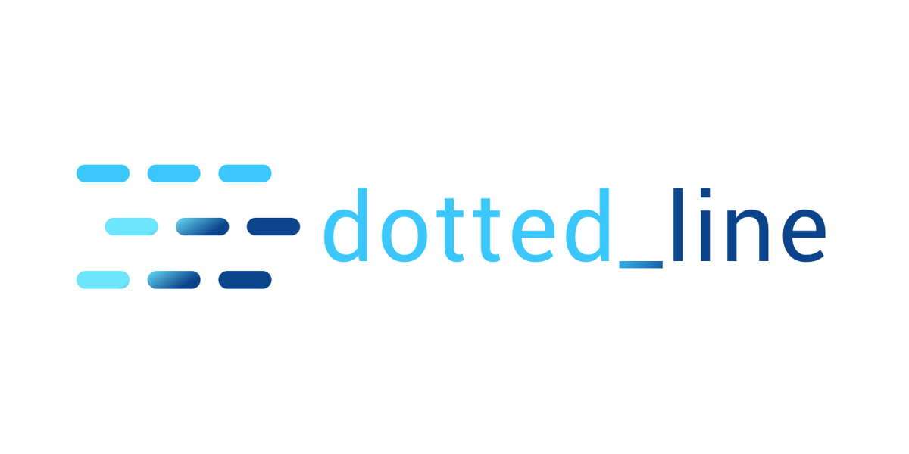
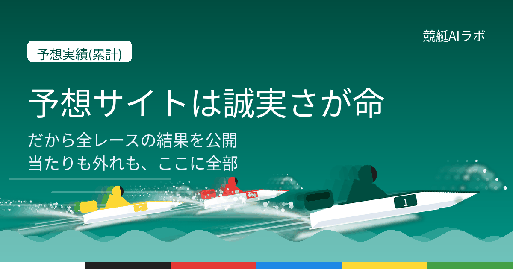
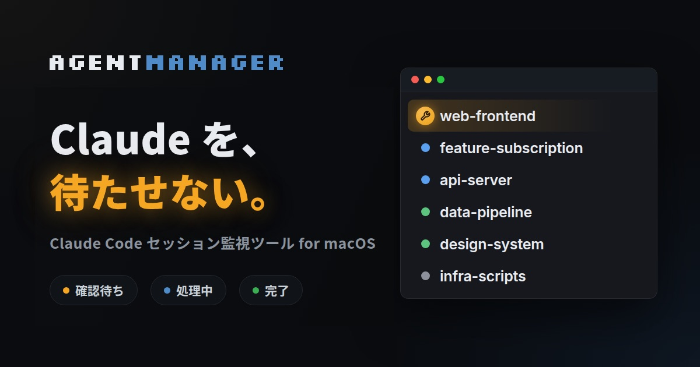
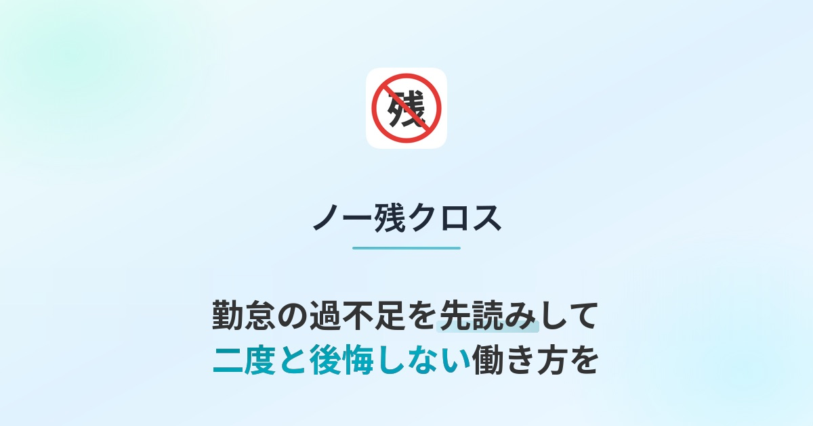
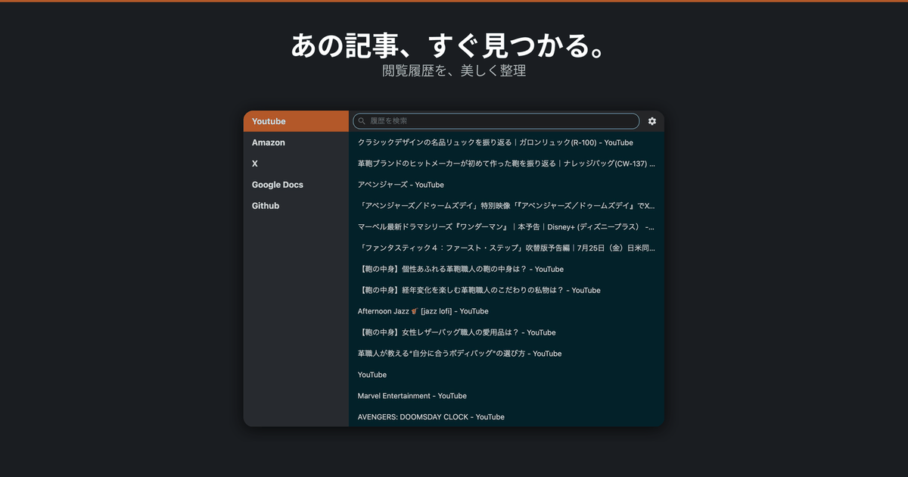

dotted_line
Flutterで点線を描くウィジェットです。2019年に公開して、いまも使われ続けています。方向・太さ・グラデーション・角丸に対応しました。再描画の多い画面向けに、最適化オプションも持たせています。
- pub.devのいいね
- 326
- GitHubのスター
- 48
pub.devはFlutterのパッケージ配布サイトです。
梅津 光
モバイルアプリエンジニア。資産運用サービスのウェルスナビ株式会社で、Androidアプリを作っています。
2016年からアプリの開発に携わっています。うち6年はプロダクトマネージャー（PdM）として、何を作るかを決めていました。
いくつかのUI案から一つを選ぶとき、どれも良く見えて決められませんでした。感覚で選んだ案は、結局差し戻しになりました。手段を測る物差しは目的にしかありません。良さそうに見えるかどうかは、判断の材料になりません。
技術的な正しさだけでは、プロダクトの決定は動きません。意見が通らないのは、間違っているからではありません。ステークホルダーに説明できるロジックがないからです。そのロジックは、エンジニアの側からでも設計できます。
異なる意見とぶつかるのを避けていた時期があります。ですが、静観した心配事は必ずどこかで顕在化します。気づかないうちに、間違った方向へ進んでいるほうが多いのです。早い衝突は、早い軌道修正です。
エンジニアとして働きながら、個人開発を続けていました。そこで、作る技術だけでは使ってもらえるサービスにならないと気づきました。何を作るか、なぜ作るかを考える力を伸ばしたくて、2019年にプロダクトマネージャーへ移りました。
何を作るか、なぜ作るかを考える力は、たしかに大切でした。ただ、自分にはもっと足りないものがありました。業界が変わっても職種が変わっても必要になる土台です。具体的には次の3つでした。
この3つでつまずいた経験が、いまの見方の元になっています。
土台が身につき、実践できるようになってきた頃です。久しぶりに個人開発をして、作ることの楽しさを思い出しました。新卒の研修で、思い描いたものが動くものとして形になる感覚がとても楽しかったです。それが原体験になっていました。
2025年10月にエンジニアへ戻りました。理由は2つあります。
加えて、AIを活用したものづくりに乗り遅れたくないという思いもありました。
Android5人、iOS5人のモバイルチームで、資産運用サービスの機能開発をしています。実装に携わりながら、チームと開発プロセスを整えています。
事業側から要件を受け取ったら、システム観点の要望や制約を返します。あわせて、開発を担う立場だから気づける顧客視点のフィードバックも返します。
条件の組み合わせや顧客の状態を網羅的に整理し、それぞれの場合に何が起きるかを洗い出します。そのうえで、顧客に受け入れられる体験になっているかを事業側と話しながら形にしています。
既存の資産運用サービスの改善と、新規事業の立ち上げの両方を担当しました。開発と事業の橋渡しとして、要件の整理から仕様の決定、リリースまで関わりました。
鉄道事業者向けの公式アプリと、自社のバスナビゲーションアプリを担当しました。要件定義から実装・テスト・障害対応まで、AndroidとFlutterの両方で関わりました。
Androidは2016年から、Flutterは2019年から実務で使っています。

Flutterで点線を描くウィジェットです。2019年に公開して、いまも使われ続けています。方向・太さ・グラデーション・角丸に対応しました。再描画の多い画面向けに、最適化オプションも持たせています。
pub.devはFlutterのパッケージ配布サイトです。

AIが毎日データを分析して、競艇の予想を出すサイトです。実績を盛った予想サイトが多いなかで、的中実績を全公開することを軸にしました。予想の作られ方も公開し、出す数字は機械集計値だけに絞っています。

コーディングエージェントを複数並行で動かすと、入力待ちで止まったものに気づけません。それを知らせて、ワンクリックで該当の画面へ飛べるようにしたツールです。配布と更新の仕組みまで作って運用しています。

勤怠の過不足を先読みして、毎日少しずつ調整できるようにするWebアプリです。足りない分を残業しようにも、働ける時間には限度があります。残業した分をまとめて早上がりするのも簡単ではありません。毎日少しずつなら調整できる、という考え方で作りました。

2016年から126本公開しています。